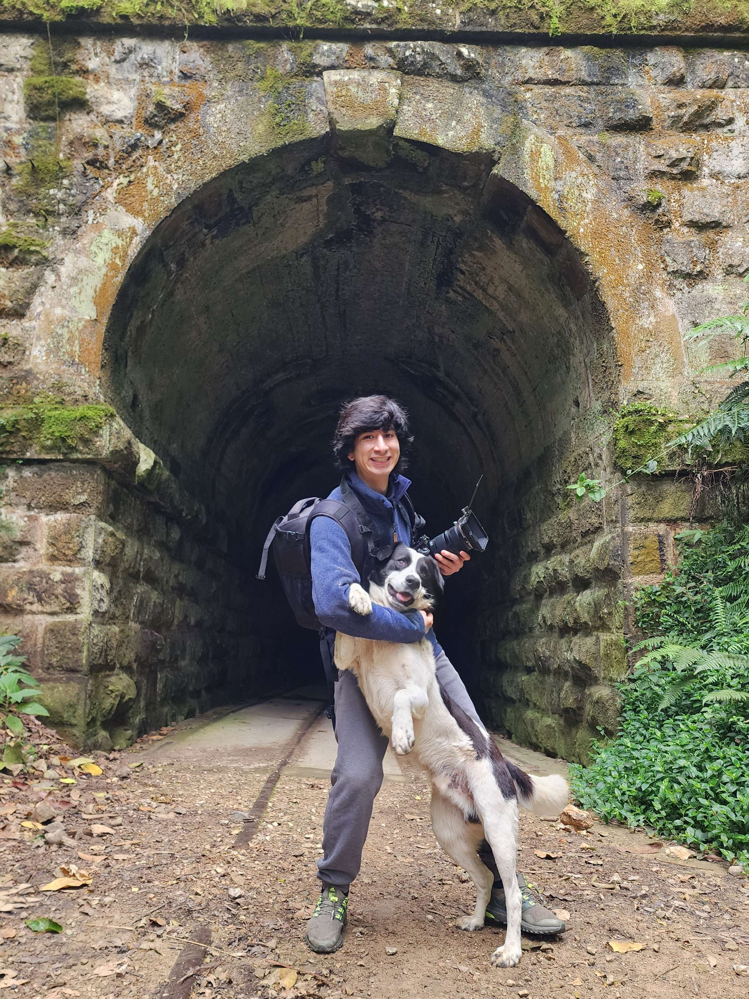

Nicolas Morales-Sanabria
A.K.A. Nimosana
Languages
English, Français, Español
Statement
I am a digital artist and musician from Montreal, Canada. I am a student at Concordia University, studying Computer Science. I am passionate about technology and design, and I am always looking for new challenges. I am a quick learner and I am able to pick up new skills very quickly. I am also a team player and I am able to work well with others.
Biography
I am a digital artist and musician from Montreal, Canada. I am a student at Concordia University, studying Computer Science. I am passionate about technology and design, and I am always looking for new challenges. I am a quick learner and I am able to pick up new skills very quickly. I am also a team player and I am able to work well with others.
Education
BFA Specialization in Computation Arts, Concordia University
Recipient of the Behaviour Interactive Research Chair in Game Design undergraduate scholarships (2024-2025).
DEC in Computer Science and Mathematics (Sciences Informatiques et Mathématiques), Collège de Maisonneuve
My thesis project saw the development of the game Défense planétaire.
Work Experience
Videographer and Editor, Contract
I produced the highlight video for the 2024-2025 Behaviour Interactive Research Chair in Game Design, which expanded to include serving as the videographer (but not editor) for LUDODROME 2025, an experimental game exhibition.
Parking Attendant, Place des Arts
During my time working at Place des Arts, I took the initiative and designed and 3D-printed custom click-counter holders which simplified the team's work and remained in use after my departure.